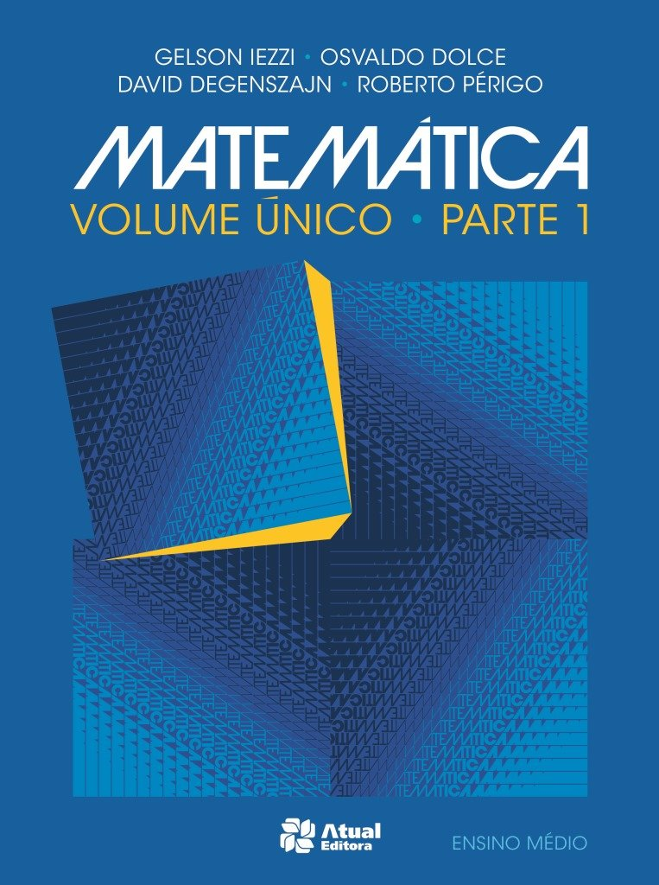

|  |
|
Nesta 9ª edição, assim como em todas as anteriores,
os autores mantêm a tradição de escrever um livro
que auxilie os estudantes a descobrir o cálculo –
tanto por sua utilidade prática, como por sua surpreendente
beleza. O intuito é transmitir ao leitor uma ideia da utilidade
do cálculo, assim como promover o desenvolvimento de sua
habilidade técnica. Ao mesmo tempo, os autores empenharam-se
em valorizar a beleza intrínseca do assunto. Não há dúvida de que
Newton experimentou uma sensação de triunfo quando fez suas
grandes descobertas. O objetivo desta obra é fazer que os estudantes
compartilhem um pouco desse entusiasmo. |